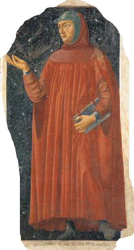
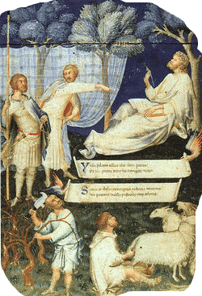

Введение в романо-германскую филологию
| лекция 1 | лекция 7 | лекция 8 |
| лекция 2 |  |
лекция 9 |
| лекция 3 | лекция 10 | |
| лекция 4 | лекция 11 | |
| лекция 5 | лекция 12 | |
| лекция 6 | лекция 13 |
ЛЕКЦИЯ 11:
Возрождение – дело рук РГФ
На вкус и цвет товарища нет.
То, что для кого-то мясо, другому – отрава.
Кто-то бубнит «мрак средневековья», «духовный гнет в Средние Века», а Марина Цветаева экзальтированно восклицает:
- О, нет! Они не средние! Они такие высокие эти века!!
И такое про них нарасскажет, ну, до того красиво, аж...
Но не будемте отвлекаться – у РГФ есть свои определённые рамки.
Итак, Средние Века. Латынь – единый язык международного общения, церкви, науки.
Единая церковь на всю Европу – христианская. Вынашиваются планы создания единого европейского государства, уже и название придумали – Хрисцарство.
Дело за малым: договориться кто же будет в этом царстве банковать – руководитель церкви (папа римский), или кто-то из мирских владык. Но в этой малости вся заковыка – государей много, хочется каждому, а нужен всего один.
Конкуренты друг с другом на ножах, а порой и папе римскому пинки отвешивают.
Люди терпеть не могут быть такими же, как все. Непременно надо им отличиться/выделиться. Каждый солдат одевает форменную шапку на свой личный и неповторимый бекрень.
Именно в этом выбрыке людской природы и лежит, пожалуй объяснение тому, что даже при единой вере разными были монашеские организации/ордена.
Веровали члены тех орденов в одного и того же Бога, но форма одежды у них была разная и разными были наименования орденов. Тут тебе и капуцины, и бенедектинцы, и францисканцы, и иезуиты, и проч., и проч.
И вот монах одного из этого множества орденов, итальянец Франческо Петрарка (1304-74) стал отцом Великого Возрождения, но для этого ему сперва пришлось стать гуманистом.
Что такое гуманист?
Может оно и так, и вы, возможно, тоже правы, но в Италии 14 в. словом umanisti называли тех, кто изучает и преподает гуманитарные науки.
С чего пошло?
Homo значит «человек», которому отводился 3-й подраздел античной философии, и все науки в составе этого подраздела были для человека:
- граматика,
- риторика;
либо про человека:
- история,
- моральная/этическая философия.
Вот почему «гуманистами» в ту пору называли не только и не столько доброжелательно благотворительных людей, а тех из них, кто клёво кумекал в вышеперечисленых четырёх науках.
Но уж совсем нетрудно предположить, что набравшись познаний в гуманитарных науках, человек становился гуманистом и в привычном для нас теперь смысле этого слова.
Ф. Петрарка, естественно, не единственным был гуманистом, но от остальных отличался тем, что был лидером движения заключавшегося в собирании античных рукописей и в очищении латинского языка от варварских извращений, ведь Возрождение было названо так потому, что это было движением за возрождение античной мудрости.
Именно гуманисты Возрождения дали название Средним Векам, как векам лежащим в промежутке—посередине—между античной эпохой (476 ПРХ) и современным им 14-м столетием. figure class="featurebox_center centered2">(Сколько веков в Средних Веках?)
Сподвижник Петрарки, Джованни Бокаччо (1313-75) тоже искал рукописи, а найдя обнаруживал в них (как и прочие гуманисты) множество искажений.
Копии сделанные с одного и того же текста, но в разных местах и в разное время, часто не совпадали.
Разночтения могут появляться по разным причинам:
- – из-за механических повреждений (при пожаре полстраницы обгорело);
- – из-за случайного пропуска (переписчик вздремнул на работе);
- – из-за недоразумений при перемене правил чистописания и каллиграфии;
- – из-за недопонимания языка или предмета, о котором идёт речь в тексте;
- – по невнимательности;
- – по глупости;
- – из-за осознанных попыток подправить текст под своё мировоззрение
Чтобы выявить и—насколько возможно—ликвидировать подобные отклонения, гуманистами была разработана техника текстуальной критики. Задача текстуальной критики воссоздать то, чего чего уж больше нет – совершить повторение на филологическом уровне Христова чуда «Лазарь, выходи!»
Разумеется, для этого нужно не только превосходнейшее владение языком и глубочайшее знакомство с классической
литературой, но также и знание культуры, которая формировала сознание древнего автора и влияла на его писания.
(Нет надобности долго доказывать, что если бы во времена Гомера употреблялся бы такой инструмент культуры как вилка, то он, при описании богини утренней зари Эос, нашел бы в ней и другие достойные воспевания черты, помимо её неоднократно поминаемых розовых пальчиков. Они-то тут не куртуазная деталь, а проявление здорового утреннего аппетита – намёк на завтрак.)
Старания гуманистов по этой части вылились в науку по имени КЛАССИЧЕСКАЯ ФИЛОЛОГИЯ, которая здравствует и поныне, ведает изучением античных текстов.
Гуманистам жутко нравилось отыскивать неправильности в манускриптах и выправлять их, но правка это частенько была довольно легкомысленная, а они не удосуживались отметить «тут поправлено мною», из-за чего более поздние классические филологи крепко на них психовали.
Итак, Возрождение, в первую очередь, было борьбой за чистоту языка – латыни. Латынь гуманиста должна быть изящной и элегантной, как у самих древних и самым жестоким оскорблением в ту эпоху «интеллектуальных гладиаторов», было если на тебя скажут, что у тебя варварская латынь, неуклюжая, средневековая.
И снова-таки, чтобы добиться чистоты латыни, приходилось окунаться в литературу древних, а это не проходило даром – происходило заражение идеями минувших эпох.
Например, возродилось понятие достоинства (virtue).

Какие признаки определяют «стóящего» человека, который обладает этой самой virtue?
Богословие утверждало, что цену человека определяет его служение Богу.
Несколько размазанное пояснение, особенно на фоне древней литературы с массой конкретных примеров «настоящести» - человеческого качества, которое выявляется и на форуме, и на поле битвы.
Классическая литература полна образцов красноречия, вследствие знакомства с которыми ораторское искусство начинает пониматься как власть в чистом виде, как орудие подвигнуть властителей, либо сограждан, на следование тем, или иным политическим целям. (Такой лапшы навешать, чтоб приболтать на дело.)
Естественно, когда человек начитывается всего такого подобного, это ему даром с рук не сходит. Он начинает иначе смотреть на мир вокруг себя и на себя самого в этом мире.
Для гуманистов, мир есть полигон, где испытывается на прочность человеческая добротность – стóящность, где проверяется «мужик ты или тля».
Ну, а сама жизнь дана человеку затем, чтоб развивал своё человеческое достоинство-добротность по самую завязку.
Вместе с тем, гуманисты не собирались переделывать человечество радикально и из-под палки; можно ж ведь (по мнению гуманистов) изменять общественный порядок через осознание и растолкование, чтоб люди сами поняли что им действительно нужнее – личная карета или свой ребёнок?
Так что гуманисты не могли уже оставаться философами-отшельниками или кабинетными учеными, но должны были активно вмешиваться в жизнь – «ходить в народ».
Наука, что для Аристотеля была наивысшей целью, у гуманистов превращается в орудие для достижения отдельной цели – быть добродеятельным.
(Не слишком далеко ушли они от стоиков, не правда ли?)
«Надо стоять в ряду бойцов, биться врукопашную за справедливость, за истину, за честь.»
Это слова Чолучо Салутати (1334-1406), что стал лидером движения гуманистов вслед за Петраркой. Он был канцлером Флоренции, собрал прекрасную библиотеку и пригласил из Константинополя учителя Кризолопоса, чтоб обучал гуманистов греческому.
Леонардо Бруни (1370-1444) перевёл на латынь (уже не средневековую) Плутарха, Ксенофонта, 6 диалогов Платона, ЭТИКУ и ПОЛИТИКУ Аристотеля.
Поджио Брачиолини (1380-1459) охотился за манускриптами в Германии, во Франции, специально ездил за ними в Англию.
Гуманистами начато было изучение античных монументов в Италии, надписей на них.
Создавались коллекции монет, статуй, картин.
Киряк (Cyriacus) из Анконы (1391-1452) ездил в страны турецкой империи – рисовать монументы и списывать надписи, что были впоследствии утрачены.
Вершин профессионального владения латынью достиг Лоренцо Валла (1405-57), написавший книгу ИЗЯЩНОСТИ ЛАТЫНИ, что стала первым учебником латыни со времён Приска; учебник этот потом не одну сотню лет использовался по всей Европе.
Папа Николай V заказал ему переводы основных греческих авторов.
(Что поделаешь, в мире – где правят мнения – папам тоже приходится не отставать от моды, чтоб не угодить в варвары.)
Валла перевёл на латынь Фукидида и ИЛИАДУ, правда, прозой. И он же, Валла, стал основателем такой науки как ИСТОРИЧЕСКАЯ ФИЛОЛОГИЯ.
Случилось это после того, как ему начало «не климатить» на севере Италии и он переехал ко двору неаполитанского короля Альфонсо, который воевал с папой римским и попросил Валлу написать трактат против папы Евгения IV.
Лоренцо не отказал и, применяя языковедческие и исторические данные, наглядно показал, что знаменитый документ именуемый «Дар Константина» (который, якобы, передавал Рим под управление папами) никак не мог быть написан в 313 г., когда император Константин амнистировал христиан своим указом, а был сфабрикован не раньше 8-го в.
Вот так, приложением отвлечённой науки—филологии—к конкретной политике накрылся козырный туз папов римских.
Но в полную силу филология заиграла в работах Валлы над текстами Нового Завета. Целью его было как можно полнее восстановить изначальный греческий вариант евангелия, для чего и пользовался самыми древними из сохранившихся манускриптов/рукописей..
Чтоб не нарваться на лишние неприятности от церкви, он оправдывался тем, что у него, мол, и в мыслях нет подправлять Священое Писание, что он просто подчищает латинский перевод Св. Джерома, который был принят католическим руководством за основу.
Впрочем, он так и не сдержался от весьма наглого – а вместе с тем и неоспоримого – заявления, что «ни одно из слов Христа до нас не дошло, поскольку говорил-то Он на еврейском и никаких конспектов к речам своим не составлял».
Собранные Валлой поправки стали достоянием широкой публики, когда в 1505 г. Эразм Роттердамский напечатал их в ПРИМЕЧАНИЯХ К НОВОМУ ЗАВЕТУ.
Да, именно напечатал, потому что в 1470 г. изобретено было печатание книг и писцы, после долгих тысячелетий нелегкого труда смогли отложить перья...
И половодье гуманизма/Возрождения вышло из итальянских берегов и хлынуло по всей Европе.
В Испании (уже освобождённой от арабов) Возрождение сделало многообещающее начало – Антоний Небрийский (1444-1522) доказал (опередив Эразма), что произношение у древних греков было иным, чем у греков современных.
Впрочем, в Испании Возрождению не дали шибко развернуться, так как, открыв Америку, она начала подумывать о мировом господстве, а государству с подобными устремлениями гуманистические идеалы и практика нужны как зайцу стоп-сигнал.
В Голландии Эразм Роттердамский (1466-1536) углублённо вникал в библейские тексты и в писания Отцов Церкви, но все же выкроил время для перевода греческих и римских авторов.
Франция в 16-м ст. вплотную занялась греками.
Великий книгопечатник Робер Эстьен (Robert Estienne) сделал первое критическое издание греческого Евангелия, перепечатав Эразма, но с добавлением выдержек из 15 манускриптов.
А теперь скажите мне – легко ли людям узревшим светозарную истину новых идей (пусть даже дошедших из прошлого) удержаться от сообщения этой истины родственникам, соседям, народу?
Нет – воздержание такое нестерпимо.
Но как сообщишь, если народ в «елегантностях латыни» не смыслит не бельмеса?
Хочешь, не хочешь, а народу приходится объяснять на его же языке. И у народа уже появилось избыточное время для посторонних (не-желудочных) радумий, потому что из новооткрытой Америки в Европу завезли не только сифилис, но и
к а р т о ш к у – хлеб № 2.
Вот почему, как это ни пародоксально, Возрождение классической литературы привело к бурному само-признанию в Европе местных языков.
Обучение в университетах стали вести на национальных языках, а латынь превратилась просто в одну из дисциплин университетского образования.
Перед филологами же открывалось широчайшее поле деятельности – надо было составлять граматики и словари для ново-независимых языков Европы; а плюс к тому для экзотических языков Африки, Востока, Нового Света, а позднее Сибири, Центральной Азии, Океании – что они и делали—усердно и прилежно—оглядываясь при этом на образцы (eidos’ы) оставленные древними.
ЗАДАНИЕ:
Ваши примеры